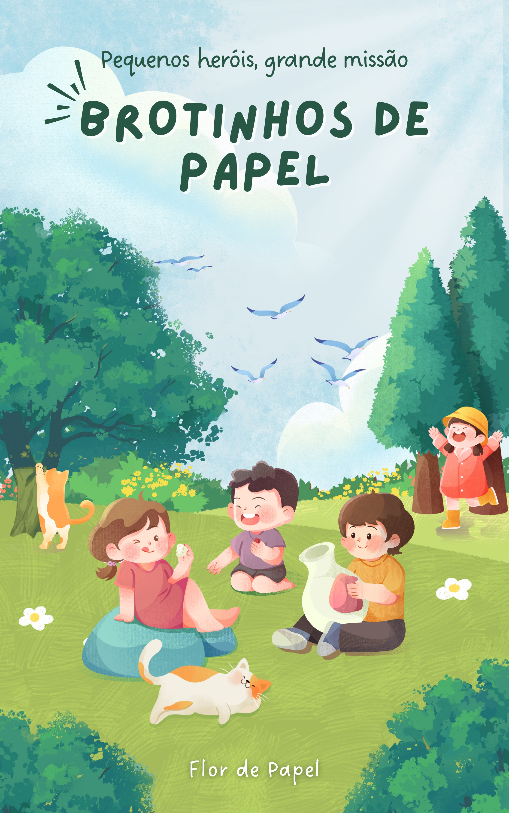

Brotinhos de Papel
Florecendo novas histórias e novos autores
Organização: Editora Flor de Papel
Um projeto encantador que reúne histórias escritas por jovens autores, mostrando que a imaginação floresce em qualquer idade.
📖 Baixar Livro (PDF)| Editora: | Flor de Papel |
| Ano: | 2025 |
| Páginas: | 45 |
| Idioma: | Português |
| Formato: |
Sobre o Projeto
Brotinhos de Papel é uma iniciativa que incentiva a criatividade literária de crianças e jovens, reunindo suas histórias em uma coletânea encantadora. Este projeto busca mostrar que todo sonho pode florescer em palavras.
Saiba mais clicando aqui